Though Colleges are typically meant to be a knowledge powerhouse, FISAT goes much beyond. At FISAT too, education comes first. However, arts, creativity and sports also stand tall, at the core of the values at our college. I fondly remember those days when my professors at CSE department happily volunteered to spend extra time with a few of us, taking evening classes to make up for the days we could not attend…
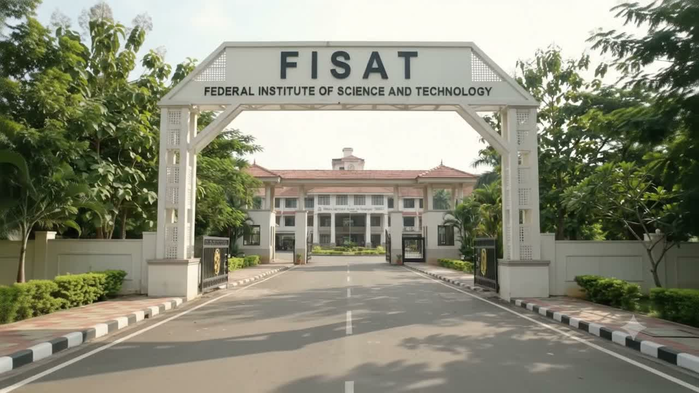
Federal Institute of Science And Technology
Focus on
Focus on
Excellence.
An autonomous engineering & management campus at Hormis Nagar, Angamaly — where Kerala’s engineers, managers and innovators are made.
Est. 2002 · Promoted by FBOAES
Step through the arch.
Founded by the officers of Federal Bank to build a centre of excellence in professional education — on the birthplace of K. P. Hormis.
Accredited & autonomous
Recognised for quality.
A+NAAC · 3.45 CGPA
6B.Tech programmes · NBA
2025UGC Autonomous status
ISO21001:2018 certified
Past the gatehouse
Forty acres of possibility.
3200+Students
9Departments
1300+Hostel residents
30College buses
Latest
Session on France Connect: Pathways to Higher Education, Scholarships & Research OpportunitiesFrom Design to Simulation: Five-Day Workshop on ANSYS FEAIntroductory Session On Linked InSkill Development Pprogram On STM32 MicrocontrollerStrategic Mathematics: Essential Tactics for Computing and IntelligenceNexus 2026Resonance 3.0 — Alumni InteractionCall for Papers – 4th International Conference on Sustainable Materials, Manufacturing and Renewable Technologies – i-SMaRT 2026Solidworks Skill Development Training ProgrammeZero2One @ KTU2026 – KTU Induction Programme & Inauguration of Autonomous BatchNational Level 24 Hour Electronics Hackathon Burn A BoardThe Hall of Fame – Celebrating the Victories!
The Institution
A centre of excellence, built by the officers of Federal Bank.
FISAT was established in 2002 by the Federal Bank Officers’ Association Educational Society with one motto — “Focus on Excellence.” Over two decades it has carved a niche through its students’ achievements in academics, placements, research and innovation.
In 2025 the UGC conferred Autonomous Status on FISAT for ten years. The institution holds NAAC A+, NBA accreditation for six B.Tech programmes and ISO 21001:2018 certification.

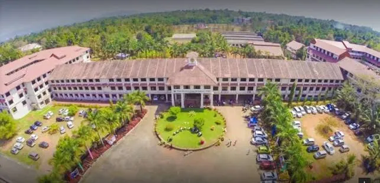
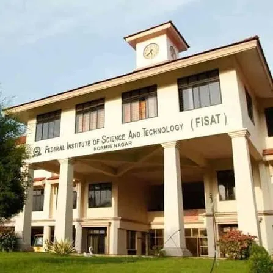
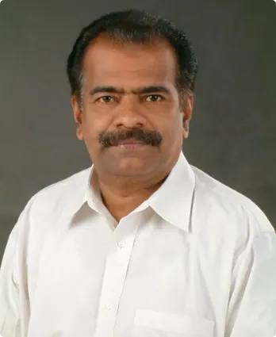
Adv. P. V. MathewFounder Chairman · 1953–2017
By the numbers
See placement records
Twenty-three years of results.
23yrsLegacy since 2002
₹12cr+Worth of scholarships
602Offers · Class of 2026
17.22LPAHighest package 2026
3,200+Students on campus
NAAC A+2nd cycle · 3.45 CGPA
NBACSE, ECE, EEE, EIE, ME & CE
AutonomousUGC, 10 years from 2025
AICTEApproved, New Delhi
KTUAPJ Abdul Kalam Technological University
ISO21001:2018 EOMS certified
Academics
Find your programme.
Seven B.Tech programmes, M.Tech, MBA, MCA and doctoral research — affiliated to KTU and approved by AICTE.
B.TechNBA Accredited
Computer Science & Engineering
B.TechNBA Accredited
Electronics & Communication Engineering
B.TechNBA Accredited
Civil Engineering
B.TechNBA Accredited
Mechanical Engineering
B.TechNBA Accredited
Electrical & Electronics Engineering
B.TechNBA Accredited
Electronics & Instrumentation Engineering
B.TechEmerging
Computer Science & Design
M.Tech2 years
Artificial Intelligence and Data Science
M.Tech2 years
AI and Data Science (Working Professionals)
M.Tech2 years
Power Electronics and Power Systems
M.Tech2 years
VLSI & Embedded Systems
M.Tech2 years
Renewable Energy
M.Tech2 years
Renewable Energy (Working Professionals)
M.Tech2 years
Structural Engineering & Construction Management
MBA2 years
Master of Business Administration
MCA2 years
Master of Computer Applications
MCA5 years
Integrated MCA
Ph.DKTU Research Centre
Computer Science and Engineering
Ph.DKTU Research Centre
Electronics and Communication Engineering
Ph.DKTU Research Centre
Electrical and Electronics Engineering
Ph.DKTU Research Centre
Mechanical Engineering
Ph.DKTU Research Centre
Civil Engineering
Ph.DKTU Research Centre
Computer Applications
Departments
Nine departments. One campus.
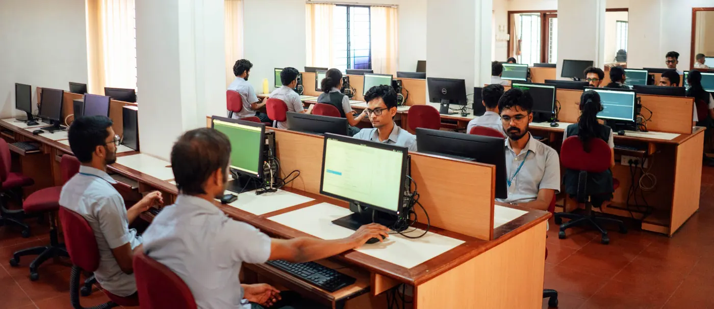
CSE
Computer Science and Engineering
The Department of Computer Science & Engineering was established in the year 2002.
Explore department
ECE
Electronics and Communication Engineering
Established in 2002, the Department of Electronics and Communication Engineering (ECE) at the Federal Institute of Science and Technology (FISAT), Angamaly, is dedicated…
Explore department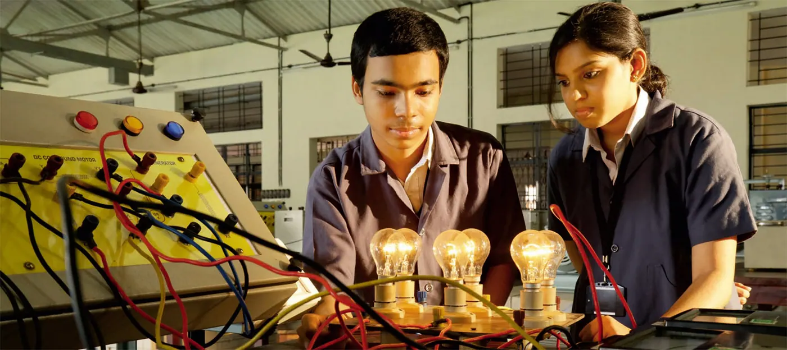
EEE
Electrical and Electronics Engineering
The Department of Electrical And Electronics Engineering was established in the year 2002 with a primary objective of offering value-added educational experience through…
Explore department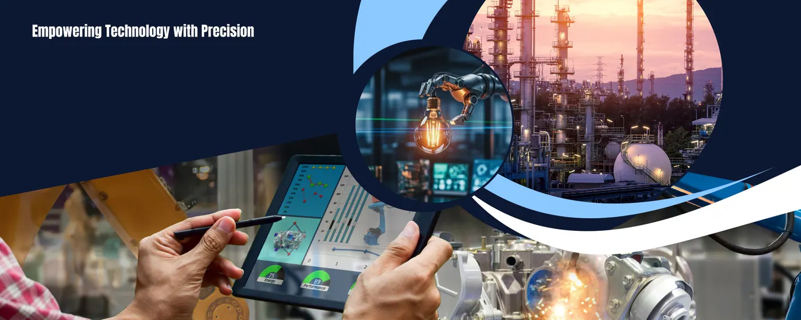
EIE
Electronics and Instrumentation Engineering
Instrumentation is a multidisciplinary field of engineering, integrating principles from electronics, computing, and mechanical engineering.
Explore department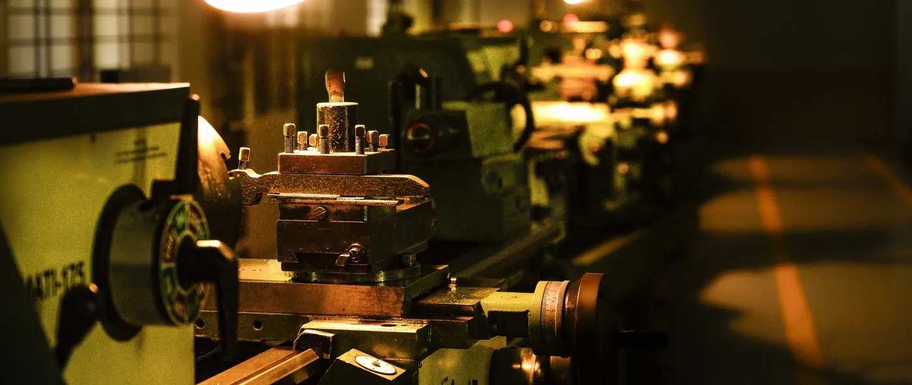
ME
Mechanical Engineering
The Mechanical Engineering department at FISAT offers a B.Tech programme in Mechanical Engineering (NBA Accredited) and an M.Tech programme in Renewable Energy.
Explore department
CE
Civil Engineering
The Department of Civil Engineering started offering a B.Tech programme in Civil Engineering in the year 2011 with an intake of 60, which was increased to 120 in the…
Explore department
MBA
FISAT Business School (MBA)
FISAT Business School (FBS), established and managed by Federal Bank Officers Association Educational Society (FBOAES), is a Management Institution under the aegis of…
Explore department
MCA
Computer Applications
Established in 2006, the Department of Computer Applications at the Federal Institute of Science and Technology (FISAT) offers a two-year MCA programme with an annual…
Explore department
S&H
Science and Humanities
The department of Science and Humanities is one of the first established departments in FISAT.
Explore departmentExplore
All facilities
Have a look at what FISAT offers.
Placements
The best of career opportunities.
One of the biggest placement records among self-financing engineering colleges in Kerala — every student goes through 150+ hours of training before campus recruitment.
602Offers for the Class of 2026
₹17.22LHighest package, 2026
741Offers in 120 companies, 2023
906Offers in 79 companies, 2022


Campus Gazette
What’s happening at FISAT.

29Sep 26
Session on France Connect: Pathways to Higher Education, Scholarships & Research Opportunities
Read more
28Sep 26
From Design to Simulation: Five-Day Workshop on ANSYS FEA
Read more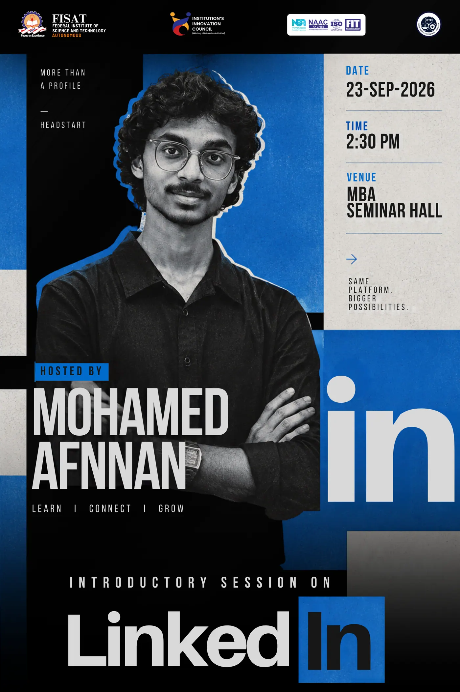
23Sep 26
Introductory Session On Linked In
Read more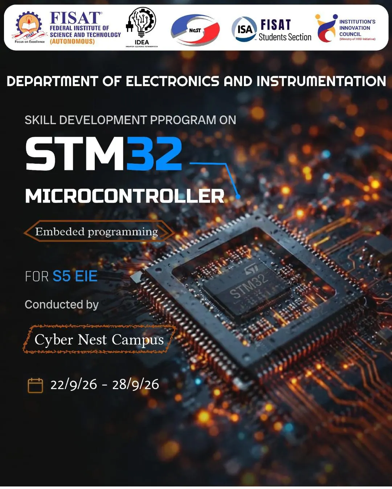
22Sep 26
Skill Development Pprogram On STM32 Microcontroller
Read more
18Nov 26
Call for Papers – 4th International Conference on Sustainable Materials, Manufacturing and Renewable Technologies – i-SMaRT 2026
Read more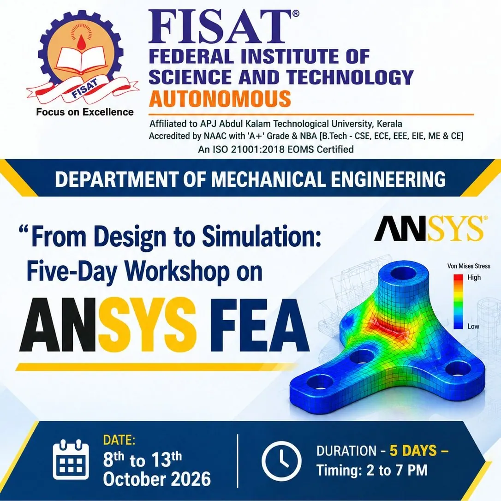
13Oct 26
From Design to Simulation: Five-Day Workshop on ANSYS FEA
Read more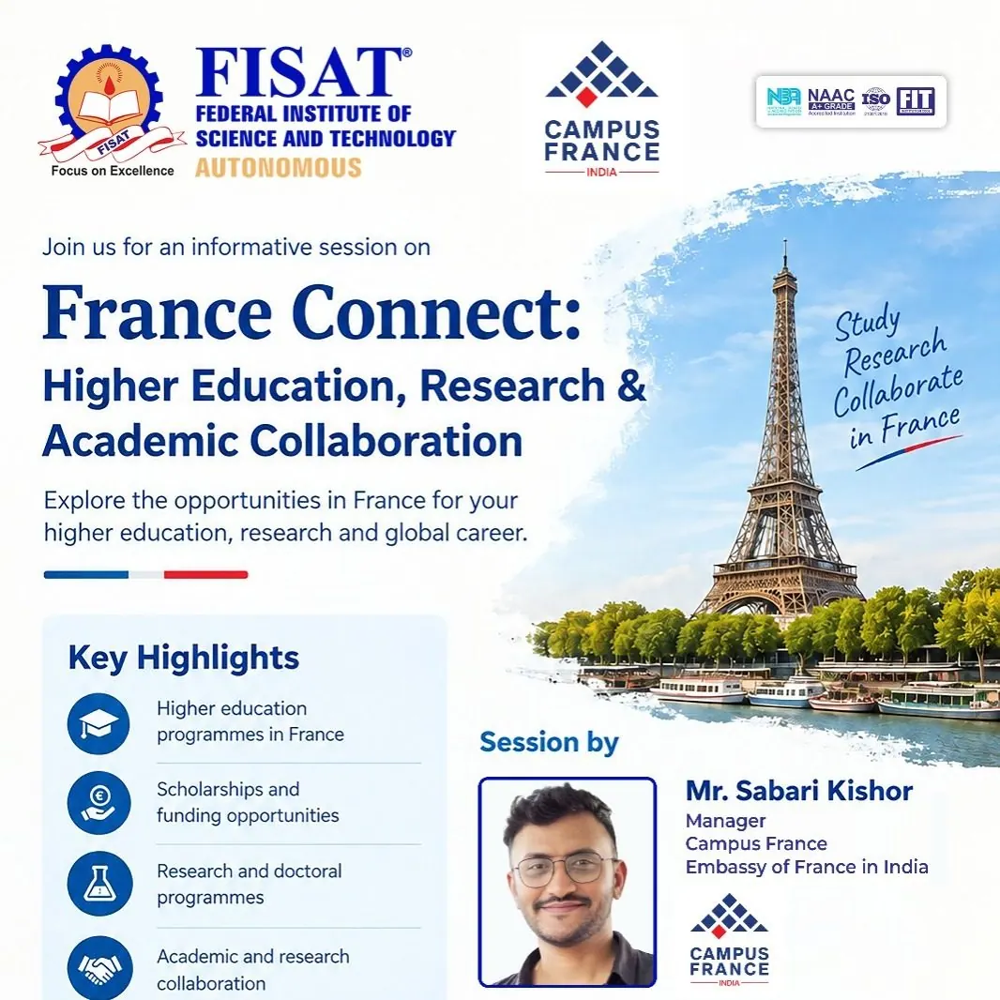
30Sep 26
Session on France Connect: Pathways to Higher Education, Scholarships & Research Opportunities
Read more28Sep 26
Skill Development Pprogram On STM32 Microcontroller
Read moreAlumni voices
In their own words.
“FISAT -A bundle of joy and memories to cherish for a lifetime. Those were the days when I was the taught lessons for life. I had the best faculties in the area of electronics and communication, which helped me to pursue my dreams. I will always be thankful to FISAT and would ever remain a pivotal milestone in my life.”
Outstanding and dedicated faculty, well-equipped laboratories and library, and environment to learn and collaborate is the hallmark of FISAT’s Electrical and Electronics Engineering Department. Personally, as an aspiring engineer, I had great academic experience at FISAT with exceptional mentorship and timely advice to advance my career. I developed the solid knowledge and toolset at the EEE department to be a…
I completed Btech in Electronics and Instrumentation Engineering from FISAT, in the year 2016. FISAT is the best place from where you will get lot of opportunities to develop yourself. The department ensured that all the projects and mini projects were done in the college itself. This boosted the self-confidence of the students to tackle real world problems on their own. Currently, I’m doing Masters in Digital…
One of the important aspects of undergraduate education is to guide students’ thought processes in the right direction. My undergraduate study in the mechanical engineering department at FISAT pushed me in the right direction, which got me where I am today. The distinguished faculty team and excellent infrastructure provide the ideal ecosystem to help students evolve in all directions and pursue their dreams. I…
The Civil Engineering program at FISAT has been a unique and rewarding experience. From the moment you start classes, the professors waste no time in indulging you in the challenging yet interesting curriculum, which consists of a combination of well-developed courses.
Good attitude, good facilities, good students. Wishing FBS all the very best.
My arrival at FISAT was full of excitement. I was able to acquire in-depth knowledge on subjects given in the lectures and practicals. I was consistently inspired by the head of department and entire teachers in the department. We got plenty of opportunities to develop our all round personalities not only through excellent academic atmosphere but also through various co-curricular, cultural and sports activities.…
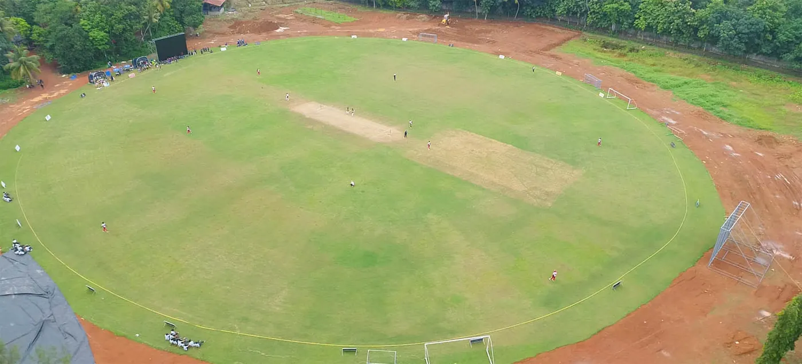
Hormis Nagar, Mookkannoor
A typical Kerala village, an extraordinary campus.
4 kmfrom NH-544
7 kmfrom Angamaly railway station
11 kmfrom Kochi International Airport
Admissions open
Begin at the gate. Graduate ready.
B.Tech (Autonomous) management quota registration for 2027 is open. We do not have any agents for admission.